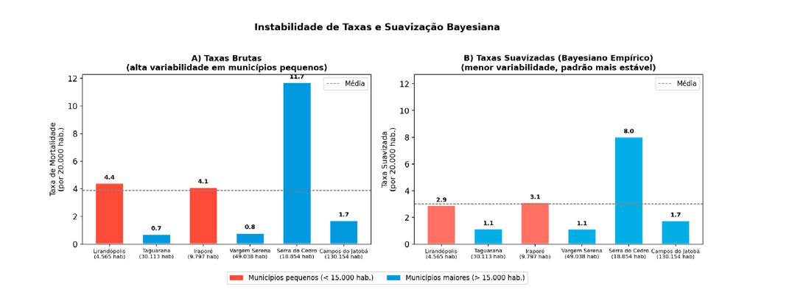
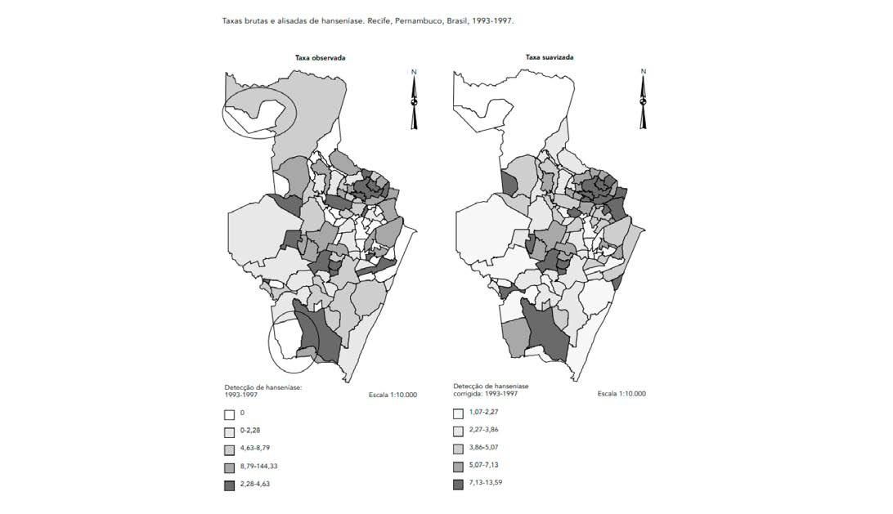

Módulo 3 | Aula 6
Análise Espacial de Dados – Área
Instabilidade de Taxas
Um dos maiores desafios ao trabalhar com dados de área, especialmente quando as áreas são pequenas (como bairros ou setores censitários), é o problema dos pequenos números, que leva à instabilidade das taxas (Carvalho &Souza-Santos, 2005; Câmara et al., 2004).
Áreas com populações pequenas podem apresentar taxas de mortalidade ou incidência extremamente altas ou baixas devido ao acaso. Por exemplo, em um bairro com apenas 10 nascimentos em um ano, um único óbito infantil resultaria em uma taxa altíssima (100 por mil), enquanto a ausência de óbitos resultaria em uma taxa de zero. Esses valores extremos muitas vezes não refletem o risco real, mas sim a flutuação aleatória.
Tabela 1: Taxa de Mortalidade de municípios
| Município (fictício) | População | Nº de óbitos | Tx. Mortalidade |
|---|---|---|---|
| Lirandópolis | 4.565 | 1 | 4,4 |
| Taguarana | 30.113 | 1 | 0,7 |
| Iraporé | 9.797 | 2 | 4,1 |
| Vargem Serena | 49.038 | 2 | 0,8 |
| Serra do Cedro | 18.854 | 11 | 11,7 |
| Campos do Jatobá | 130.154 | 11 | 1,7 |
Nota: Os nomes acima são fictícios e usados apenas para fins didáticos.
Observando os dados da tabela, verificamos que os municípios de Lirandópolis e Taguarana tiveram o mesmo número de óbitos, mas como a população do primeiro é pequena, a taxa acaba sendo alta. A mesma coisa acontece para os municípios de Serra de cedro e Campos do Jatobá, ambos tiveram 11 óbitos, mas por causa da população as taxas são bem diferentes.
Ignorar esse problema pode levar a uma alocação inadequada de recursos, direcionando a atenção para áreas que parecem ter um problema grave, mas que na verdade são apenas estatisticamente instáveis. A solução para isso é a suavização de taxas, sendo o método mais comum o Estimador Bayesiano Empírico (Carvalho &Souza-Santos, 2005; Câmara et al., 2004).
A ideia do estimador bayesiano é “corrigir” a taxa observada em uma área, levando em consideração sua própria estabilidade (ou seja, o tamanho de sua população) e a informação de seus vizinhos. A taxa suavizada é uma média ponderada entre a taxa observada na área e uma taxa de referência (que pode ser a média global ou a média dos vizinhos). O peso dado à taxa observada é proporcional ao tamanho da população da área. Assim:
Têm taxas estáveis. O estimador dá muito peso à taxa observada, e o valor suavizado será muito próximo do original.
Têm taxas instáveis. O estimador dá pouco peso à taxa observada e “puxa” o valor em direção à média de referência, resultando em uma estimativa de risco mais robusta e confiável.
Figura 5 - Efeito da Suavização Bayesiana na Instabilidade de Taxas.

Fonte: Elaborado pelos autores (2026).
A figura mostra dois gráficos de barras, cada um representando diferentes formas de calcular taxas de mortalidade em municípios fictícios (tabela 1).
No gráfico da esquerda (A) que mostra as taxas brutas, a distribuição é dispersa e irregular. As diferenças entre municípios refletem a instabilidade das taxas, especialmente em locais com pouca população.
No gráfico da direita (B) apresenta as taxas suavizadas, calculadas por método bayesiano empírico. São os mesmos seis municípios, com cores seguindo a mesma lógica do painel A.
Observamos claramente:
- Como taxas brutas podem ser instáveis, principalmente em municípios com pouca população.
- Como a suavização bayesiana reduz essa instabilidade, gerando valores mais coerentes e menos dependentes de flutuações aleatórias.
Nos mapas abaixo, retirado de um artigo sobre hanseníase em Recife, o método foi utilizado para corrigir as taxas permitindo uma identificação mais precisa dos bairros prioritários para a vigilância (Souza, et.al, 2001; Carvalho e Souza-Santos, 2005).
Figura 6: Mapa com as taxas brutas e alisadas de hanseníase. Recife, 1993 – 1997.

Fonte: Souza et al., 2001.
Observando os mapas pode-se observar que após a suavização, os mapas tornaram-se menos fragmentados, evidenciando bolsões/áreas com maior gravidade para a ocorrência da doença. O modelo bayesiano, usando a vizinhança por adjacência, permitiu reestimar os indicadores epidemiológicos por bairro, suavizando as taxas, reduzindo a flutuação aleatória dos valores e revelando padrões reais (inclusive sugerindo sub-registro) e orientou a priorização territorial das ações de controle.